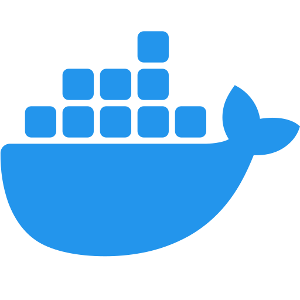
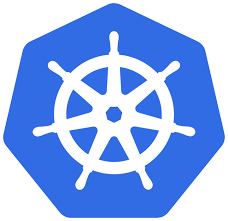
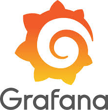

DevOps는 개발팀과 운영팀 간의 장벽을 허물고, 지속적인 통합(CI)과 지속적인 배포(CD)를 통해 협업과 자동화를 강화합니다.
과거처럼 각 팀이 독립적으로 작업하던 방식에서 벗어나, 모든 팀이 동일한 목표를 향해 유기적으로 협력하는 문화를 지향합니다.
DevOps는 계획, 개발, 배포, 운영, 모니터링의 순환 과정을 통해 소프트웨어를 지속적으로 개선합니다.
코드 변경 사항을 자주 병합하여 버그를 조기에 발견
통합된 코드가 항상 배포 가능한 상태로 유지됨
빌드, 테스트, 배포, 감시 과정을 자동화
개발과 운영팀 간의 실시간 소통 및 상호 피드백 강화
릴리스 주기를 단축하고 변화에 빠르게 대응
자동화 테스트를 통해 오류를 사전에 방지
자동화를 통해 불필요한 인력 낭비 최소화
신속한 피드백을 반영해 소프트웨어를 지속 개선


